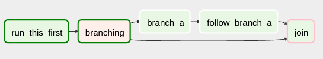
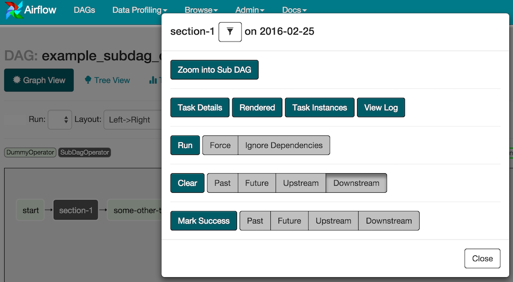

Concepts¶
The Airflow Platform is a tool for describing, executing, and monitoring workflows.
Core Ideas¶
DAGs¶
In Airflow, a DAG – or a Directed Acyclic Graph – is a collection of all
the tasks you want to run, organized in a way that reflects their relationships
and dependencies.
For example, a simple DAG could consist of three tasks: A, B, and C. It could say that A has to run successfully before B can run, but C can run anytime. It could say that task A times out after 5 minutes, and B can be restarted up to 5 times in case it fails. It might also say that the workflow will run every night at 10pm, but shouldn’t start until a certain date.
In this way, a DAG describes how you want to carry out your workflow; but notice that we haven’t said anything about what we actually want to do! A, B, and C could be anything. Maybe A prepares data for B to analyze while C sends an email. Or perhaps A monitors your location so B can open your garage door while C turns on your house lights. The important thing is that the DAG isn’t concerned with what its constituent tasks do; its job is to make sure that whatever they do happens at the right time, or in the right order, or with the right handling of any unexpected issues.
DAGs are defined in standard Python files that are placed in Airflow’s
DAG_FOLDER. Airflow will execute the code in each file to dynamically build
the DAG objects. You can have as many DAGs as you want, each describing an
arbitrary number of tasks. In general, each one should correspond to a single
logical workflow.
Note
When searching for DAGs, Airflow only considers python files
that contain the strings “airflow” and “DAG” by default. To consider
all python files instead, disable the DAG_DISCOVERY_SAFE_MODE
configuration flag.
Scope¶
Airflow will load any DAG object it can import from a DAGfile. Critically,
that means the DAG must appear in globals(). Consider the following two
DAGs. Only dag_1 will be loaded; the other one only appears in a local
scope.
dag_1 = DAG('this_dag_will_be_discovered')
def my_function():
dag_2 = DAG('but_this_dag_will_not')
my_function()
Sometimes this can be put to good use. For example, a common pattern with
SubDagOperator is to define the subdag inside a function so that Airflow
doesn’t try to load it as a standalone DAG.
Default Arguments¶
If a dictionary of default_args is passed to a DAG, it will apply them to
any of its operators. This makes it easy to apply a common parameter to many operators without having to type it many times.
default_args = {
'start_date': datetime(2016, 1, 1),
'owner': 'Airflow'
}
dag = DAG('my_dag', default_args=default_args)
op = DummyOperator(task_id='dummy', dag=dag)
print(op.owner) # Airflow
Context Manager¶
Added in Airflow 1.8
DAGs can be used as context managers to automatically assign new operators to that DAG.
with DAG('my_dag', start_date=datetime(2016, 1, 1)) as dag:
op = DummyOperator('op')
op.dag is dag # True
Operators¶
While DAGs describe how to run a workflow, Operators determine what
actually gets done.
An operator describes a single task in a workflow. Operators are usually (but not always) atomic, meaning they can stand on their own and don’t need to share resources with any other operators. The DAG will make sure that operators run in the correct certain order; other than those dependencies, operators generally run independently. In fact, they may run on two completely different machines.
This is a subtle but very important point: in general, if two operators need to share information, like a filename or small amount of data, you should consider combining them into a single operator. If it absolutely can’t be avoided, Airflow does have a feature for operator cross-communication called XCom that is described elsewhere in this document.
Airflow provides operators for many common tasks, including:
BashOperator- executes a bash commandPythonOperator- calls an arbitrary Python functionEmailOperator- sends an emailSimpleHttpOperator- sends an HTTP requestMySqlOperator,SqliteOperator,PostgresOperator,MsSqlOperator,OracleOperator,JdbcOperator, etc. - executes a SQL commandSensor- waits for a certain time, file, database row, S3 key, etc…
In addition to these basic building blocks, there are many more specific
operators: DockerOperator,
HiveOperator, S3FileTransformOperator,
PrestoToMySqlTransfer,
SlackAPIOperator… you get the idea!
Operators are only loaded by Airflow if they are assigned to a DAG.
See Using Operators for how to use Airflow operators.
DAG Assignment¶
Added in Airflow 1.8
Operators do not have to be assigned to DAGs immediately (previously dag was
a required argument). However, once an operator is assigned to a DAG, it can not
be transferred or unassigned. DAG assignment can be done explicitly when the
operator is created, through deferred assignment, or even inferred from other
operators.
dag = DAG('my_dag', start_date=datetime(2016, 1, 1))
# sets the DAG explicitly
explicit_op = DummyOperator(task_id='op1', dag=dag)
# deferred DAG assignment
deferred_op = DummyOperator(task_id='op2')
deferred_op.dag = dag
# inferred DAG assignment (linked operators must be in the same DAG)
inferred_op = DummyOperator(task_id='op3')
inferred_op.set_upstream(deferred_op)
Bitshift Composition¶
Added in Airflow 1.8
We recommend you setting operator relationships with bitshift operators rather than set_upstream()
and set_downstream().
Traditionally, operator relationships are set with the set_upstream() and
set_downstream() methods. In Airflow 1.8, this can be done with the Python
bitshift operators >> and <<. The following four statements are all
functionally equivalent:
op1 >> op2
op1.set_downstream(op2)
op2 << op1
op2.set_upstream(op1)
When using the bitshift to compose operators, the relationship is set in the
direction that the bitshift operator points. For example, op1 >> op2 means
that op1 runs first and op2 runs second. Multiple operators can be
composed – keep in mind the chain is executed left-to-right and the rightmost
object is always returned. For example:
op1 >> op2 >> op3 << op4
is equivalent to:
op1.set_downstream(op2)
op2.set_downstream(op3)
op3.set_upstream(op4)
For convenience, the bitshift operators can also be used with DAGs. For example:
dag >> op1 >> op2
is equivalent to:
op1.dag = dag
op1.set_downstream(op2)
We can put this all together to build a simple pipeline:
with DAG('my_dag', start_date=datetime(2016, 1, 1)) as dag:
(
DummyOperator(task_id='dummy_1')
>> BashOperator(
task_id='bash_1',
bash_command='echo "HELLO!"')
>> PythonOperator(
task_id='python_1',
python_callable=lambda: print("GOODBYE!"))
)
Bitshift can also be used with lists. For example:
op1 >> [op2, op3] >> op4
is equivalent to:
op1 >> op2 >> op4
op1 >> op3 >> op4
and equivalent to:
op1.set_downstream([op2, op3])
Relationship Helper¶
chain and cross_downstream function provide easier ways to set relationships
between operators in specific situation.
When setting relationships between two list of operators and wish all up list operators as upstream to all down list operators, we have to split one list manually using bitshift composition.
[op1, op2, op3] >> op4
[op1, op2, op3] >> op5
[op1, op2, op3] >> op6
cross_downstream could handle list relationships easier.
cross_downstream([op1, op2, op3], [op4, op5, op6])
When setting single direction relationships to many operators, we could concat them with bitshift composition.
op1 >> op2 >> op3 >> op4 >> op5
use chain could do that
chain(op1, op2, op3, op4, op5)
even without operator’s name
chain([DummyOperator(task_id='op' + i, dag=dag) for i in range(1, 6)])
chain could handle list of operators
chain(op1, [op2, op3], op4)
is equivalent to:
op1 >> [op2, op3] >> op4
Have to same size when chain set relationships between two list
of operators.
chain(op1, [op2, op3], [op4, op5], op6)
is equivalent to:
op1 >> [op2, op3]
op2 >> op4
op3 >> op5
[op4, op5] >> op6
Tasks¶
Once an operator is instantiated, it is referred to as a “task”. The instantiation defines specific values when calling the abstract operator, and the parameterized task becomes a node in a DAG.
Task Instances¶
A task instance represents a specific run of a task and is characterized as the combination of a dag, a task, and a point in time. Task instances also have an indicative state, which could be “running”, “success”, “failed”, “skipped”, “up for retry”, etc.
Workflows¶
You’re now familiar with the core building blocks of Airflow. Some of the concepts may sound very similar, but the vocabulary can be conceptualized like this:
DAG: a description of the order in which work should take place
Operator: a class that acts as a template for carrying out some work
Task: a parameterized instance of an operator
Task Instance: a task that 1) has been assigned to a DAG and 2) has a state associated with a specific run of the DAG
By combining DAGs and Operators to create TaskInstances, you can
build complex workflows.
Additional Functionality¶
In addition to the core Airflow objects, there are a number of more complex features that enable behaviors like limiting simultaneous access to resources, cross-communication, conditional execution, and more.
Hooks¶
Hooks are interfaces to external platforms and databases like Hive, S3,
MySQL, Postgres, HDFS, and Pig. Hooks implement a common interface when
possible, and act as a building block for operators. They also use
the airflow.models.connection.Connection model to retrieve hostnames
and authentication information. Hooks keep authentication code and
information out of pipelines, centralized in the metadata database.
Hooks are also very useful on their own to use in Python scripts, Airflow airflow.operators.PythonOperator, and in interactive environments like iPython or Jupyter Notebook.
Pools¶
Some systems can get overwhelmed when too many processes hit them at the same
time. Airflow pools can be used to limit the execution parallelism on
arbitrary sets of tasks. The list of pools is managed in the UI
(Menu -> Admin -> Pools) by giving the pools a name and assigning
it a number of worker slots. Tasks can then be associated with
one of the existing pools by using the pool parameter when
creating tasks (i.e., instantiating operators).
aggregate_db_message_job = BashOperator(
task_id='aggregate_db_message_job',
execution_timeout=timedelta(hours=3),
pool='ep_data_pipeline_db_msg_agg',
bash_command=aggregate_db_message_job_cmd,
dag=dag)
aggregate_db_message_job.set_upstream(wait_for_empty_queue)
The pool parameter can
be used in conjunction with priority_weight to define priorities
in the queue, and which tasks get executed first as slots open up in the
pool. The default priority_weight is 1, and can be bumped to any
number. When sorting the queue to evaluate which task should be executed
next, we use the priority_weight, summed up with all of the
priority_weight values from tasks downstream from this task. You can
use this to bump a specific important task and the whole path to that task
gets prioritized accordingly.
Tasks will be scheduled as usual while the slots fill up. Once capacity is
reached, runnable tasks get queued and their state will show as such in the
UI. As slots free up, queued tasks start running based on the
priority_weight (of the task and its descendants).
Note that by default tasks aren’t assigned to any pool and their execution parallelism is only limited to the executor’s setting.
Connections¶
The connection information to external systems is stored in the Airflow
metadata database and managed in the UI (Menu -> Admin -> Connections).
A conn_id is defined there and hostname / login / password / schema
information attached to it. Airflow pipelines can simply refer to the
centrally managed conn_id without having to hard code any of this
information anywhere.
Many connections with the same conn_id can be defined and when that
is the case, and when the hooks uses the get_connection method
from BaseHook, Airflow will choose one connection randomly, allowing
for some basic load balancing and fault tolerance when used in conjunction
with retries.
Airflow also has the ability to reference connections via environment variables from the operating system. Then connection parameters must be saved in URI format.
If connections with the same conn_id are defined in both Airflow metadata
database and environment variables, only the one in environment variables
will be referenced by Airflow (for example, given conn_id
postgres_master, Airflow will search for AIRFLOW_CONN_POSTGRES_MASTER
in environment variables first and directly reference it if found,
before it starts to search in metadata database).
Many hooks have a default conn_id, where operators using that hook do not
need to supply an explicit connection ID. For example, the default
conn_id for the PostgresHook is
postgres_default.
See Managing Connections for how to create and manage connections.
Queues¶
When using the CeleryExecutor, the Celery queues that tasks are sent to
can be specified. queue is an attribute of BaseOperator, so any
task can be assigned to any queue. The default queue for the environment
is defined in the airflow.cfg’s celery -> default_queue. This defines
the queue that tasks get assigned to when not specified, as well as which
queue Airflow workers listen to when started.
Workers can listen to one or multiple queues of tasks. When a worker is
started (using the command airflow worker), a set of comma-delimited
queue names can be specified (e.g. airflow worker -q spark). This worker
will then only pick up tasks wired to the specified queue(s).
This can be useful if you need specialized workers, either from a resource perspective (for say very lightweight tasks where one worker could take thousands of tasks without a problem), or from an environment perspective (you want a worker running from within the Spark cluster itself because it needs a very specific environment and security rights).
XComs¶
XComs let tasks exchange messages, allowing more nuanced forms of control and shared state. The name is an abbreviation of “cross-communication”. XComs are principally defined by a key, value, and timestamp, but also track attributes like the task/DAG that created the XCom and when it should become visible. Any object that can be pickled can be used as an XCom value, so users should make sure to use objects of appropriate size.
XComs can be “pushed” (sent) or “pulled” (received). When a task pushes an
XCom, it makes it generally available to other tasks. Tasks can push XComs at
any time by calling the xcom_push() method. In addition, if a task returns
a value (either from its Operator’s execute() method, or from a
PythonOperator’s python_callable function), then an XCom containing that
value is automatically pushed.
Tasks call xcom_pull() to retrieve XComs, optionally applying filters
based on criteria like key, source task_ids, and source dag_id. By
default, xcom_pull() filters for the keys that are automatically given to
XComs when they are pushed by being returned from execute functions (as
opposed to XComs that are pushed manually).
If xcom_pull is passed a single string for task_ids, then the most
recent XCom value from that task is returned; if a list of task_ids is
passed, then a corresponding list of XCom values is returned.
# inside a PythonOperator called 'pushing_task'
def push_function():
return value
# inside another PythonOperator where provide_context=True
def pull_function(**context):
value = context['task_instance'].xcom_pull(task_ids='pushing_task')
It is also possible to pull XCom directly in a template, here’s an example of what this may look like:
SELECT * FROM {{ task_instance.xcom_pull(task_ids='foo', key='table_name') }}
Note that XComs are similar to Variables, but are specifically designed for inter-task communication rather than global settings.
Variables¶
Variables are a generic way to store and retrieve arbitrary content or
settings as a simple key value store within Airflow. Variables can be
listed, created, updated and deleted from the UI (Admin -> Variables),
code or CLI. In addition, json settings files can be bulk uploaded through
the UI. While your pipeline code definition and most of your constants
and variables should be defined in code and stored in source control,
it can be useful to have some variables or configuration items
accessible and modifiable through the UI.
from airflow.models import Variable
foo = Variable.get("foo")
bar = Variable.get("bar", deserialize_json=True)
baz = Variable.get("baz", default_var=None)
The second call assumes json content and will be deserialized into
bar. Note that Variable is a sqlalchemy model and can be used
as such. The third call uses the default_var parameter with the value
None, which either returns an existing value or None if the variable
isn’t defined. The get function will throw a KeyError if the variable
doesn’t exist and no default is provided.
You can use a variable from a jinja template with the syntax :
echo {{ var.value.<variable_name> }}
or if you need to deserialize a json object from the variable :
echo {{ var.json.<variable_name> }}
Branching¶
Sometimes you need a workflow to branch, or only go down a certain path
based on an arbitrary condition which is typically related to something
that happened in an upstream task. One way to do this is by using the
BranchPythonOperator.
The BranchPythonOperator is much like the PythonOperator except that it
expects a python_callable that returns a task_id (or list of task_ids). The
task_id returned is followed, and all of the other paths are skipped.
The task_id returned by the Python function has to be referencing a task
directly downstream from the BranchPythonOperator task.
Note that using tasks with depends_on_past=True downstream from
BranchPythonOperator is logically unsound as skipped status
will invariably lead to block tasks that depend on their past successes.
skipped states propagates where all directly upstream tasks are
skipped.
If you want to skip some tasks, keep in mind that you can’t have an empty path, if so make a dummy task.
like this, the dummy task “branch_false” is skipped

Not like this, where the join task is skipped
The BranchPythonOperator can also be used with XComs allowing branching
context to dynamically decide what branch to follow based on previous tasks.
For example:
def branch_func(**kwargs):
ti = kwargs['ti']
xcom_value = int(ti.xcom_pull(task_ids='start_task'))
if xcom_value >= 5:
return 'continue_task'
else:
return 'stop_task'
start_op = BashOperator(
task_id='start_task',
bash_command="echo 5",
xcom_push=True,
dag=dag)
branch_op = BranchPythonOperator(
task_id='branch_task',
provide_context=True,
python_callable=branch_func,
dag=dag)
continue_op = DummyOperator(task_id='continue_task', dag=dag)
stop_op = DummyOperator(task_id='stop_task', dag=dag)
start_op >> branch_op >> [continue_op, stop_op]
If you wish to implement your own operators with branching functionality, you
can inherit from BaseBranchOperator,
which behaves similarly to BranchPythonOperator but expects you to provide
an implementation of the method choose_branch. As with the callable for
BranchPythonOperator, this method should return the ID of a downstream task,
or a list of task IDs, which will be run, and all others will be skipped.
class MyBranchOperator(BaseBranchOperator):
def choose_branch(self, context):
"""
Run an extra branch on the first day of the month
"""
if context['execution_date'].day == 1:
return ['daily_task_id', 'monthly_task_id']
else:
return 'daily_task_id'
SubDAGs¶
SubDAGs are perfect for repeating patterns. Defining a function that returns a DAG object is a nice design pattern when using Airflow.
Airbnb uses the stage-check-exchange pattern when loading data. Data is staged in a temporary table, after which data quality checks are performed against that table. Once the checks all pass the partition is moved into the production table.
As another example, consider the following DAG:

We can combine all of the parallel task-* operators into a single SubDAG,
so that the resulting DAG resembles the following:

Note that SubDAG operators should contain a factory method that returns a DAG object. This will prevent the SubDAG from being treated like a separate DAG in the main UI. For example:
#dags/subdag.py
from airflow.models import DAG
from airflow.operators.dummy_operator import DummyOperator
# Dag is returned by a factory method
def sub_dag(parent_dag_name, child_dag_name, start_date, schedule_interval):
dag = DAG(
'%s.%s' % (parent_dag_name, child_dag_name),
schedule_interval=schedule_interval,
start_date=start_date,
)
dummy_operator = DummyOperator(
task_id='dummy_task',
dag=dag,
)
return dag
This SubDAG can then be referenced in your main DAG file:
# main_dag.py
from datetime import datetime, timedelta
from airflow.models import DAG
from airflow.operators.subdag_operator import SubDagOperator
from dags.subdag import sub_dag
PARENT_DAG_NAME = 'parent_dag'
CHILD_DAG_NAME = 'child_dag'
main_dag = DAG(
dag_id=PARENT_DAG_NAME,
schedule_interval=timedelta(hours=1),
start_date=datetime(2016, 1, 1)
)
sub_dag = SubDagOperator(
subdag=sub_dag(PARENT_DAG_NAME, CHILD_DAG_NAME, main_dag.start_date,
main_dag.schedule_interval),
task_id=CHILD_DAG_NAME,
dag=main_dag,
)
You can zoom into a SubDagOperator from the graph view of the main DAG to show the tasks contained within the SubDAG:
Some other tips when using SubDAGs:
by convention, a SubDAG’s
dag_idshould be prefixed by its parent and a dot. As inparent.childshare arguments between the main DAG and the SubDAG by passing arguments to the SubDAG operator (as demonstrated above)
SubDAGs must have a schedule and be enabled. If the SubDAG’s schedule is set to
Noneor@once, the SubDAG will succeed without having done anythingclearing a SubDagOperator also clears the state of the tasks within
marking success on a SubDagOperator does not affect the state of the tasks within
refrain from using
depends_on_past=Truein tasks within the SubDAG as this can be confusingit is possible to specify an executor for the SubDAG. It is common to use the SequentialExecutor if you want to run the SubDAG in-process and effectively limit its parallelism to one. Using LocalExecutor can be problematic as it may over-subscribe your worker, running multiple tasks in a single slot
See airflow/example_dags for a demonstration.
SLAs¶
Service Level Agreements, or time by which a task or DAG should have
succeeded, can be set at a task level as a timedelta. If
one or many instances have not succeeded by that time, an alert email is sent
detailing the list of tasks that missed their SLA. The event is also recorded
in the database and made available in the web UI under Browse->SLA Misses
where events can be analyzed and documented.
Email Configuration¶
You can configure the email that is being sent in your airflow.cfg
by setting a subject_template and/or a html_content_template
in the email section.
[email]
email_backend = airflow.utils.email.send_email_smtp
subject_template = /path/to/my_subject_template_file
html_content_template = /path/to/my_html_content_template_file
To access the task’s information you use Jinja Templating in your template files.
For example a html_content_template file could look like this:
Try {{try_number}} out of {{max_tries + 1}}<br>
Exception:<br>{{exception_html}}<br>
Log: <a href="{{ti.log_url}}">Link</a><br>
Host: {{ti.hostname}}<br>
Log file: {{ti.log_filepath}}<br>
Mark success: <a href="{{ti.mark_success_url}}">Link</a><br>
Trigger Rules¶
Though the normal workflow behavior is to trigger tasks when all their directly upstream tasks have succeeded, Airflow allows for more complex dependency settings.
All operators have a trigger_rule argument which defines the rule by which
the generated task get triggered. The default value for trigger_rule is
all_success and can be defined as “trigger this task when all directly
upstream tasks have succeeded”. All other rules described here are based
on direct parent tasks and are values that can be passed to any operator
while creating tasks:
all_success: (default) all parents have succeededall_failed: all parents are in afailedorupstream_failedstateall_done: all parents are done with their executionone_failed: fires as soon as at least one parent has failed, it does not wait for all parents to be doneone_success: fires as soon as at least one parent succeeds, it does not wait for all parents to be donenone_failed: all parents have not failed (failedorupstream_failed) i.e. all parents have succeeded or been skippednone_skipped: no parent is in askippedstate, i.e. all parents are in asuccess,failed, orupstream_failedstatedummy: dependencies are just for show, trigger at will
Note that these can be used in conjunction with depends_on_past (boolean)
that, when set to True, keeps a task from getting triggered if the
previous schedule for the task hasn’t succeeded.
One must be aware of the interaction between trigger rules and skipped tasks
in schedule level. Skipped tasks will cascade through trigger rules
all_success and all_failed but not all_done, one_failed, one_success,
none_failed, none_skipped and dummy.
For example, consider the following DAG:
#dags/branch_without_trigger.py
import datetime as dt
from airflow.models import DAG
from airflow.operators.dummy_operator import DummyOperator
from airflow.operators.python_operator import BranchPythonOperator
dag = DAG(
dag_id='branch_without_trigger',
schedule_interval='@once',
start_date=dt.datetime(2019, 2, 28)
)
run_this_first = DummyOperator(task_id='run_this_first', dag=dag)
branching = BranchPythonOperator(
task_id='branching', dag=dag,
python_callable=lambda: 'branch_a'
)
branch_a = DummyOperator(task_id='branch_a', dag=dag)
follow_branch_a = DummyOperator(task_id='follow_branch_a', dag=dag)
branch_false = DummyOperator(task_id='branch_false', dag=dag)
join = DummyOperator(task_id='join', dag=dag)
run_this_first >> branching
branching >> branch_a >> follow_branch_a >> join
branching >> branch_false >> join
In the case of this DAG, join is downstream of follow_branch_a
and branch_false. The join task will show up as skipped
because its trigger_rule is set to all_success by default and
skipped tasks will cascade through all_success.

By setting trigger_rule to none_failed in join task,
#dags/branch_with_trigger.py
...
join = DummyOperator(task_id='join', dag=dag, trigger_rule='none_failed')
...
The join task will be triggered as soon as
branch_false has been skipped (a valid completion state) and
follow_branch_a has succeeded. Because skipped tasks will not
cascade through none_failed.

Latest Run Only¶
Standard workflow behavior involves running a series of tasks for a particular date/time range. Some workflows, however, perform tasks that are independent of run time but need to be run on a schedule, much like a standard cron job. In these cases, backfills or running jobs missed during a pause just wastes CPU cycles.
For situations like this, you can use the LatestOnlyOperator to skip
tasks that are not being run during the most recent scheduled run for a
DAG. The LatestOnlyOperator skips all downstream tasks, if the time
right now is not between its execution_time and the next scheduled
execution_time.
For example, consider the following dag:
#dags/latest_only_with_trigger.py
import datetime as dt
from airflow.models import DAG
from airflow.operators.dummy_operator import DummyOperator
from airflow.operators.latest_only_operator import LatestOnlyOperator
from airflow.utils.trigger_rule import TriggerRule
dag = DAG(
dag_id='latest_only_with_trigger',
schedule_interval=dt.timedelta(hours=1),
start_date=dt.datetime(2019, 2, 28),
)
latest_only = LatestOnlyOperator(task_id='latest_only', dag=dag)
task1 = DummyOperator(task_id='task1', dag=dag)
task1.set_upstream(latest_only)
task2 = DummyOperator(task_id='task2', dag=dag)
task3 = DummyOperator(task_id='task3', dag=dag)
task3.set_upstream([task1, task2])
task4 = DummyOperator(task_id='task4', dag=dag,
trigger_rule=TriggerRule.ALL_DONE)
task4.set_upstream([task1, task2])
In the case of this dag, the latest_only task will show up as skipped
for all runs except the latest run. task1 is directly downstream of
latest_only and will also skip for all runs except the latest.
task2 is entirely independent of latest_only and will run in all
scheduled periods. task3 is downstream of task1 and task2 and
because of the default trigger_rule being all_success will receive
a cascaded skip from task1. task4 is downstream of task1 and
task2. It will be first skipped directly by LatestOnlyOperator,
even its trigger_rule is set to all_done.

Zombies & Undeads¶
Task instances die all the time, usually as part of their normal life cycle, but sometimes unexpectedly.
Zombie tasks are characterized by the absence
of an heartbeat (emitted by the job periodically) and a running status
in the database. They can occur when a worker node can’t reach the database,
when Airflow processes are killed externally, or when a node gets rebooted
for instance. Zombie killing is performed periodically by the scheduler’s
process.
Undead processes are characterized by the existence of a process and a matching
heartbeat, but Airflow isn’t aware of this task as running in the database.
This mismatch typically occurs as the state of the database is altered,
most likely by deleting rows in the “Task Instances” view in the UI.
Tasks are instructed to verify their state as part of the heartbeat routine,
and terminate themselves upon figuring out that they are in this “undead”
state.
Cluster Policy¶
Your local airflow settings file can define a policy function that
has the ability to mutate task attributes based on other task or DAG
attributes. It receives a single argument as a reference to task objects,
and is expected to alter its attributes.
For example, this function could apply a specific queue property when
using a specific operator, or enforce a task timeout policy, making sure
that no tasks run for more than 48 hours. Here’s an example of what this
may look like inside your airflow_settings.py:
def policy(task):
if task.__class__.__name__ == 'HivePartitionSensor':
task.queue = "sensor_queue"
if task.timeout > timedelta(hours=48):
task.timeout = timedelta(hours=48)
Documentation & Notes¶
It’s possible to add documentation or notes to your dags & task objects that become visible in the web interface (“Graph View” for dags, “Task Details” for tasks). There are a set of special task attributes that get rendered as rich content if defined:
attribute |
rendered to |
|---|---|
doc |
monospace |
doc_json |
json |
doc_yaml |
yaml |
doc_md |
markdown |
doc_rst |
reStructuredText |
Please note that for dags, doc_md is the only attribute interpreted.
This is especially useful if your tasks are built dynamically from configuration files, it allows you to expose the configuration that led to the related tasks in Airflow.
"""
### My great DAG
"""
dag = DAG('my_dag', default_args=default_args)
dag.doc_md = __doc__
t = BashOperator("foo", dag=dag)
t.doc_md = """\
#Title"
Here's a [url](www.airbnb.com)
"""
This content will get rendered as markdown respectively in the “Graph View” and “Task Details” pages.
Jinja Templating¶
Airflow leverages the power of Jinja Templating and this can be a powerful tool to use in combination with macros (see the Macros reference section).
For example, say you want to pass the execution date as an environment variable
to a Bash script using the BashOperator.
# The execution date as YYYY-MM-DD
date = "{{ ds }}"
t = BashOperator(
task_id='test_env',
bash_command='/tmp/test.sh ',
dag=dag,
env={'EXECUTION_DATE': date})
Here, {{ ds }} is a macro, and because the env parameter of the
BashOperator is templated with Jinja, the execution date will be available
as an environment variable named EXECUTION_DATE in your Bash script.
You can use Jinja templating with every parameter that is marked as “templated” in the documentation. Template substitution occurs just before the pre_execute function of your operator is called.
Packaged dags¶
While often you will specify dags in a single .py file it might sometimes
be required to combine dag and its dependencies. For example, you might want
to combine several dags together to version them together or you might want
to manage them together or you might need an extra module that is not available
by default on the system you are running airflow on. To allow this you can create
a zip file that contains the dag(s) in the root of the zip file and have the extra
modules unpacked in directories.
For instance you can create a zip file that looks like this:
my_dag1.py
my_dag2.py
package1/__init__.py
package1/functions.py
Airflow will scan the zip file and try to load my_dag1.py and my_dag2.py.
It will not go into subdirectories as these are considered to be potential
packages.
In case you would like to add module dependencies to your DAG you basically would do the same, but then it is more suitable to use a virtualenv and pip.
virtualenv zip_dag
source zip_dag/bin/activate
mkdir zip_dag_contents
cd zip_dag_contents
pip install --install-option="--install-lib=$PWD" my_useful_package
cp ~/my_dag.py .
zip -r zip_dag.zip *
Note
the zip file will be inserted at the beginning of module search list (sys.path) and as such it will be available to any other code that resides within the same interpreter.
Note
packaged dags cannot be used with pickling turned on.
Note
packaged dags cannot contain dynamic libraries (eg. libz.so) these need to be available on the system if a module needs those. In other words only pure python modules can be packaged.
.airflowignore¶
A .airflowignore file specifies the directories or files in DAG_FOLDER
that Airflow should intentionally ignore. Each line in .airflowignore
specifies a regular expression pattern, and directories or files whose names
(not DAG id) match any of the patterns would be ignored (under the hood,
re.findall() is used to match the pattern). Overall it works like a
.gitignore file. Use the # character to indicate a comment; all
characters on a line following a # will be ignored.
.airflowignore file should be put in your DAG_FOLDER.
For example, you can prepare a .airflowignore file with contents
project_a
tenant_[\d]
Then files like “project_a_dag_1.py”, “TESTING_project_a.py”, “tenant_1.py”,
“project_a/dag_1.py”, and “tenant_1/dag_1.py” in your DAG_FOLDER would be ignored
(If a directory’s name matches any of the patterns, this directory and all its subfolders
would not be scanned by Airflow at all. This improves efficiency of DAG finding).
The scope of a .airflowignore file is the directory it is in plus all its subfolders.
You can also prepare .airflowignore file for a subfolder in DAG_FOLDER and it
would only be applicable for that subfolder.